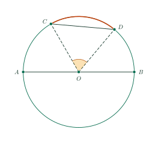
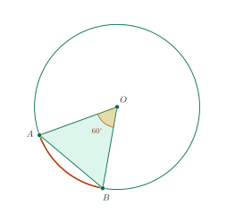

Arcs and Chords of a CircleCung và dây của một đường tròn
Grade 9 · Topic: CirclesLớp 9 · Chủ đề: Đường tròn
1Lesson IntroductionGiới thiệu bài học
Learning goalsMục tiêu bài học
By the end of this lesson you can:
Sau bài học này, em có thể:
recognize chords, diameters, central angles, minor arcs, major arcs and semicircles;
nhận biết được dây, đường kính, góc ở tâm, cung nhỏ, cung lớn, nửa đường tròn;
know that a diameter is the longest chord;
biết đường kính là dây lớn nhất;
find the measure of an arc from its central angle;
tính được số đo cung theo góc ở tâm;
solve problems with chords and arcs (clock faces, wheels).
giải bài toán về dây và cung (mặt đồng hồ, bánh xe).
2Mathematical VocabularyTừ vựng Toán học
chord – a segment joining two points of the circle.
Dây – đoạn thẳng nối hai điểm của đường tròn.
central angle – an angle with its vertex at the center.
Góc ở tâm – góc có đỉnh trùng với tâm đường tròn.
minor arc / major arc – the arc inside / outside the central angle (less / more than \(180^\circ\)).
Cung nhỏ / cung lớn – cung nằm bên trong / bên ngoài góc ở tâm (nhỏ hơn / lớn hơn \(180^\circ\)).
semicircle – each of the two arcs cut off by a diameter (\(180^\circ\)).
Nửa đường tròn – mỗi cung bị chia bởi một đường kính (\(180^\circ\)).
measure of an arc / intercepted arc – written \(m\overset{\frown}{AB}\); the arc cut off by an angle.
Số đo cung / cung bị chắn – kí hiệu \(\text{sđ}\,\overset{\frown}{AB}\); cung nằm trong góc.
3Useful English PhrasesCụm từ tiếng Anh thường gặp
\(AB\) is a chord of the circle with center \(O\).
\(AB\) là một dây của đường tròn tâm \(O\).
A chord passing through the center is a diameter.
Dây đi qua tâm là đường kính.
\(\widehat{AOB}\) is a central angle intercepting arc \(AB\).
\(\widehat{AOB}\) là góc ở tâm chắn cung \(AB\).
The measure of the minor arc \(AB\) is equal to the measure of \(\widehat{AOB}\).
Số đo cung nhỏ \(AB\) bằng số đo góc \(AOB\).
In a circle of radius \(R\), every chord has length at most \(2R\).
Trong đường tròn bán kính \(R\), mọi dây đều có độ dài không quá \(2R\).
4Prerequisite ReviewÔn tập kiến thức nền
Triangle inequality. In triangle \(OAB\): \(AB\lt OA+OB\).
Bất đẳng thức tam giác. Trong tam giác \(OAB\): \(AB\lt OA+OB\).
Lesson 13. \(OA=OB=R\) for every \(A\), \(B\) on \((O;\,R)\).
Bài 13. \(OA=OB=R\) với mọi \(A\), \(B\) thuộc \((O;\,R)\).
5TheoryLý thuyết
5.1 Chords and diametersDây và đường kính
Definitions and theoremKhái niệm và định lí
A chord is a segment joining two points of a circle. A chord through the center is a diameter.
Đoạn thẳng nối hai điểm của đường tròn là một dây. Dây đi qua tâm là đường kính.
Theorem. In a circle of radius \(R\), every chord \(AB\) satisfies \(AB\le2R\); equality holds only for a diameter. So the diameter is the longest chord.
Định lí. Trong đường tròn bán kính \(R\), mọi dây \(AB\) đều có \(AB\le2R\); dấu bằng xảy ra khi và chỉ khi \(AB\) là đường kính. Vậy đường kính là dây lớn nhất.
Reason: if \(AB\) does not pass through \(O\), then in triangle \(OAB\): \(AB\lt OA+OB=2R\).
Lí do: nếu \(AB\) không đi qua \(O\) thì trong tam giác \(OAB\): \(AB\lt OA+OB=2R\).

5.2 Arcs and central anglesCung, góc ở tâm và số đo cung
RulesQuy tắc
An angle with its vertex at the center is a central angle. Two points \(A\), \(B\) divide the circle into two arcs; the arc inside \(\widehat{AOB}\) is the minor arc, the other is the major arc.
Góc có đỉnh trùng với tâm là góc ở tâm. Hai điểm \(A\), \(B\) chia đường tròn thành hai cung; cung nằm bên trong góc \(AOB\) là cung nhỏ, cung còn lại là cung lớn.
The minor arc \(AB\) measures \(\widehat{AOB}\); the major arc \(AB\) measures \(360^\circ-\widehat{AOB}\).
Số đo cung nhỏ: \(\text{sđ}\,\overset{\frown}{AB}=\widehat{AOB}\); số đo cung lớn: \(\text{sđ}\,\overset{\frown}{AB}=360^\circ-\widehat{AOB}\).
A semicircle measures \(180^\circ\); the whole circle measures \(360^\circ\).
Nửa đường tròn có số đo \(180^\circ\); cả đường tròn có số đo \(360^\circ\).
6Worked ExamplesVí dụ có lời giải
ExampleVí dụ 1RememberingNhận biết – Parts of a circleCác yếu tố của đường tròn
In the figure above, name a diameter, a chord that is not a diameter, a central angle and the arc it intercepts.
Trong hình trên, hãy chỉ ra một đường kính, một dây không phải đường kính, một góc ở tâm và cung bị chắn bởi góc đó.
Analysis: A diameter passes through \(O\).
Phân tích: Đường kính đi qua \(O\).
Diameter: \(AB\). Chord (not a diameter): \(CD\).
Đường kính: \(AB\). Dây không phải đường kính: \(CD\).
Central angle: \(\widehat{COD}\); it intercepts the minor arc \(CD\).
Góc ở tâm: \(\widehat{COD}\); góc này chắn cung nhỏ \(CD\).
\(AB\); \(CD\); \(\widehat{COD}\) and arc \(CD\).
\(AB\); \(CD\); \(\widehat{COD}\) và cung \(CD\).
ExampleVí dụ 2UnderstandingThông hiểu – Measures of arcsSố đo cung
In circle \((O)\), \(\widehat{AOB}=125^\circ\). Find the measures of the minor and the major arc \(AB\).
Trong đường tròn \((O)\), \(\widehat{AOB}=125^\circ\). Tính số đo cung nhỏ và cung lớn \(AB\).
Analysis: Minor arc = central angle.
Phân tích: Cung nhỏ = góc ở tâm.
The minor arc \(AB\) measures \(125^\circ\).
Cung nhỏ \(AB\) có số đo \(125^\circ\).
The major arc \(AB\) measures \(360^\circ-125^\circ=235^\circ\).
Cung lớn \(AB\) có số đo \(360^\circ-125^\circ=235^\circ\).
\(125^\circ\) and \(235^\circ\).
\(125^\circ\) và \(235^\circ\).
ExampleVí dụ 3UnderstandingThông hiểu – A chord equal to the radiusDây bằng bán kính
A circle has center \(O\) and radius 6 cm; chord \(AB=6\) cm. Find the measures of the minor and the major arc \(AB\).
Đường tròn tâm \(O\) bán kính 6 cm có dây \(AB=6\) cm. Tính số đo cung nhỏ và cung lớn \(AB\).

Analysis: Compare \(OA\), \(OB\), \(AB\).
Phân tích: So sánh \(OA\), \(OB\), \(AB\).
Since \(OA=OB=AB=6\) cm, triangle \(OAB\) is equilateral. Therefore, \(\widehat{AOB}=60^\circ\).
Vì \(OA=OB=AB=6\) cm nên tam giác \(OAB\) đều. Do đó \(\widehat{AOB}=60^\circ\).
Minor arc: \(60^\circ\); major arc: \(360^\circ-60^\circ=300^\circ\).
Cung nhỏ: \(60^\circ\); cung lớn: \(360^\circ-60^\circ=300^\circ\).
\(60^\circ\) and \(300^\circ\).
\(60^\circ\) và \(300^\circ\).
ExampleVí dụ 4Basic applicationVận dụng thấp – A right central angleGóc ở tâm vuông
Circle \((O;\,8\text{ cm})\) has a chord \(AB=8\sqrt2\) cm. Show that \(\widehat{AOB}=90^\circ\), find the arcs \(AB\) and compare \(AB\) with the diameter.
Đường tròn \((O;\,8\text{ cm})\) có dây \(AB=8\sqrt2\) cm. Chứng minh \(\widehat{AOB}=90^\circ\), tính số đo các cung \(AB\) và so sánh \(AB\) với đường kính.
Analysis: Use the converse of the Pythagorean theorem.
Phân tích: Dùng định lí Pythagore đảo.
\(OA^2+OB^2=64+64=128=\left(8\sqrt2\right)^2=AB^2\), so triangle \(OAB\) is right-angled at \(O\): \(\widehat{AOB}=90^\circ\).
\(OA^2+OB^2=64+64=128=\left(8\sqrt2\right)^2=AB^2\) nên tam giác \(OAB\) vuông tại \(O\): \(\widehat{AOB}=90^\circ\).
Minor arc \(90^\circ\), major arc \(270^\circ\). \(AB=8\sqrt2\approx11.3\lt16=2R\), as expected for a chord that is not a diameter.
Cung nhỏ \(90^\circ\), cung lớn \(270^\circ\). \(AB=8\sqrt2\approx11{,}3\lt16=2R\), đúng với định lí vì \(AB\) không phải đường kính.
\(90^\circ\), \(270^\circ\); \(AB\lt2R\).
\(90^\circ\), \(270^\circ\); \(AB\lt2R\).
ExampleVí dụ 5ApplicationVận dụng – Clock faceMặt đồng hồ
The 12 numbers on a clock face divide the rim into equal arcs.
a) Find the measure of each small arc.
b) At 4 o’clock, find the central angle between the hands.
c) The clock has radius 10 cm. Could the distance between the tips of the hands (both reaching the rim) be 21 cm?
12 số trên mặt đồng hồ chia vành đồng hồ thành các cung bằng nhau.
a) Tính số đo mỗi cung nhỏ.
b) Lúc 4 giờ, tính góc ở tâm tạo bởi hai kim.
c) Đồng hồ có bán kính 10 cm. Khoảng cách giữa hai đầu kim (cùng chạm vành) có thể bằng 21 cm không?
Analysis: Each arc is \(\dfrac{360^\circ}{12}\).
Phân tích: Mỗi cung bằng \(\dfrac{360^\circ}{12}\).
a) \(\dfrac{360^\circ}{12}=30^\circ\).
b) At 4 o’clock the hands are 4 arcs apart: \(4\cdot30^\circ=120^\circ\).a) \(\dfrac{360^\circ}{12}=30^\circ\). b) Lúc 4 giờ hai kim cách nhau 4 cung: \(4\cdot30^\circ=120^\circ\).
c) The tips are the ends of a chord, and every chord is at most \(2R=20\) cm \(\lt21\) cm. So it is impossible.
c) Hai đầu kim là hai đầu mút của một dây, mà mọi dây đều không quá \(2R=20\) cm \(\lt21\) cm. Vậy không thể.
a) \(30^\circ\);
b) \(120^\circ\);
c) no.
a) \(30^\circ\);
b) \(120^\circ\);
c) không thể.
7PracticeBài tập luyện tập
A. Multiple ChoiceA. Trắc nghiệm nhiều lựa chọn
In circle \((O)\), \(\widehat{COD}=32^\circ\). Find the measure of the minor arc \(CD\).
Trong đường tròn \((O)\), \(\widehat{COD}=32^\circ\). Tính số đo cung nhỏ \(CD\).
Answer: a. Minor arc = central angle \(=32^\circ\); major arc \(=360^\circ-32^\circ=328^\circ\).
Đáp án a. Cung nhỏ = góc ở tâm \(=32^\circ\); cung lớn \(=360^\circ-32^\circ=328^\circ\).
Circle \((O;\,10\text{ cm})\). Which length CANNOT be the length of a chord?
Đường tròn \((O;\,10\text{ cm})\). Độ dài nào KHÔNG thể là độ dài của một dây?
Answer: d. Every chord is at most the diameter \(2R=20\) cm.
Đáp án d. Mọi dây đều không dài hơn đường kính \(2R=20\) cm.
In \((O;\,10\text{ cm})\), chord \(AB=10\) cm. Find the measure of the major arc \(AB\).
Trong \((O;\,10\text{ cm})\), dây \(AB=10\) cm. Tính số đo cung lớn \(AB\).
Answer: a. \(OA=OB=AB=10\): triangle \(OAB\) is equilateral, \(\widehat{AOB}=60^\circ\).
Đáp án a. \(OA=OB=AB=10\): tam giác \(OAB\) đều, \(\widehat{AOB}=60^\circ\).
B. True or FalseB. Đúng hoặc sai
In \((O)\), \(\widehat{AOB}=137^\circ\). Then the major arc \(AB\) measures \(223^\circ\).
Trong \((O)\), \(\widehat{AOB}=137^\circ\). Khi đó cung lớn \(AB\) có số đo \(223^\circ\).
True. Major arc \(=360^\circ-137^\circ=223^\circ\).
Đúng. Cung lớn \(=360^\circ-137^\circ=223^\circ\).
The circle \((O;\,7\text{ cm})\) has a chord of length 18 cm.
Đường tròn \((O;\,7\text{ cm})\) có một dây dài 18 cm.
False. A chord can have any length up to the diameter \(14\) cm.
Sai. Dây có thể có độ dài bất kì không vượt quá đường kính \(14\) cm.
C. Short AnswerC. Trả lời ngắn
Chord \(AB\) of \((O;\,18\text{ cm})\) subtends the minor arc \(AB\) of \(132^\circ\). Find \(\widehat{OAB}\) in degrees.
Dây \(AB\) của \((O;\,18\text{ cm})\) căng cung nhỏ \(AB\) có số đo \(132^\circ\). Tính số đo \(\widehat{OAB}\) (độ).
Enter a number.
Nhập một số.
Answer: 24. \(\widehat{AOB}=132^\circ\), \(OA=OB\): \(\widehat{OAB}=\dfrac{180^\circ-132^\circ}{2}=24^\circ\).
Đáp số: 24. \(\widehat{AOB}=132^\circ\), \(OA=OB\): \(\widehat{OAB}=\dfrac{180^\circ-132^\circ}{2}=24^\circ\).
Points \(A\), \(B\), \(C\) divide circle \((O)\) into three arcs \(AB\), \(BC\), \(CA\) (no overlap). Arc \(AB\) measures \(90^\circ\) and arc \(BC\) measures \(72^\circ\). Find arc \(CA\) in degrees.
Ba điểm \(A\), \(B\), \(C\) chia đường tròn \((O)\) thành ba cung \(AB\), \(BC\), \(CA\) (không chồng lên nhau). Cung \(AB\) có số đo \(90^\circ\), cung \(BC\) có số đo \(72^\circ\). Tính số đo cung \(CA\) (độ).
Enter a number.
Nhập một số.
Answer: 198. The three arcs add up to \(360^\circ\): \(360-90-72=198\).
Đáp số: 198. Ba cung có tổng số đo \(360^\circ\): \(360-90-72=198\).
D1. Self-practice – RememberingD1. Tự luyện – Mức Nhận biết
\(A\), \(B\) lie on circle \((O)\). The angle \(AOB\) is called…
\(A\), \(B\) nằm trên đường tròn \((O)\). Góc \(AOB\) được gọi là…
Answer: c. Definitions of chord, central angle and semicircle.
Đáp án c. Định nghĩa dây, góc ở tâm và nửa đường tròn.
What is the length of the longest chord of \((O;\,15\text{ cm})\)?
Dây dài nhất của \((O;\,15\text{ cm})\) dài bao nhiêu?
Answer: a. The longest chord is a diameter: \(2R=30\) cm.
Đáp án a. Dây dài nhất là đường kính: \(2R=30\) cm.
The central angle \(\widehat{AOB}\) intercepts the minor arc \(AB\) of \(125^\circ\). Find \(\widehat{AOB}\).
Góc ở tâm \(\widehat{AOB}\) chắn cung nhỏ \(AB\) có số đo \(125^\circ\). Tính \(\widehat{AOB}\).
Answer: c. The minor arc and its central angle have the same measure.
Đáp án c. Số đo cung nhỏ bằng số đo góc ở tâm chắn cung đó.
D2. Self-practice – UnderstandingD2. Tự luyện – Mức Thông hiểu
The major arc \(MN\) of \((O)\) measures \(327^\circ\). Find the central angle \(\widehat{MON}\).
Cung lớn \(MN\) của \((O)\) có số đo \(327^\circ\). Tính góc ở tâm \(\widehat{MON}\).
Answer: c. \(\widehat{MON}\) = minor arc \(=360^\circ-327^\circ=33^\circ\).
Đáp án c. \(\widehat{MON}\) = số đo cung nhỏ \(=360^\circ-327^\circ=33^\circ\).
At exactly 8 o'clock, what is the (smaller) angle between the hour hand and the minute hand of a clock?
Lúc đúng 8 giờ, góc (nhỏ hơn) giữa kim giờ và kim phút của đồng hồ bằng bao nhiêu?
Answer: c. The 12 numbers divide the circle into arcs of \(30^\circ\); the hands are \(4\cdot30^\circ=120^\circ\) apart.
Đáp án c. 12 số chia mặt đồng hồ thành 12 cung \(30^\circ\); cách nhau 4 cung: \(120^\circ\).
In \((O;\,4\text{ cm})\), chords have lengths \(1\) cm and \(4\) cm. Which statement is correct?
Trong \((O;\,4\text{ cm})\), có hai dây dài \(1\) cm và \(4\) cm. Khẳng định nào đúng?
Answer: c. Every chord \(\le 2R=8\) cm.
Đáp án c. Mọi dây đều \(\le 2R=8\) cm.
D3. Self-practice – Basic applicationD3. Tự luyện – Mức Vận dụng thấp
In \((O;\,14\text{ cm})\), \(\widehat{AOB}=60^\circ\). Find the chord \(AB\).
Trong \((O;\,14\text{ cm})\), \(\widehat{AOB}=60^\circ\). Tính độ dài dây \(AB\).
Answer: d. Draw \(OH\perp AB\): \(AB=2R\sin\dfrac{\widehat{AOB}}{2}=2\cdot14\cdot\sin 30^\circ\).
Đáp án d. Kẻ \(OH\perp AB\): \(AB=2R\sin\dfrac{\widehat{AOB}}{2}=2\cdot14\cdot\sin 30^\circ\).
In \((O;\,13\text{ cm})\), chord \(AB=13\sqrt3\) cm. Find the minor arc \(AB\).
Trong \((O;\,13\text{ cm})\), dây \(AB=13\sqrt3\) cm. Tính số đo cung nhỏ \(AB\).
Answer: a. \(\sin\dfrac{\widehat{AOB}}{2}=\dfrac{AB}{2R}\Rightarrow \widehat{AOB}=120^\circ\).
Đáp án a. \(\sin\dfrac{\widehat{AOB}}{2}=\dfrac{AB}{2R}\Rightarrow \widehat{AOB}=120^\circ\).
A chord of \((O;\,5\text{ cm})\) is at distance 3 cm from \(O\). Find the length of the chord.
Một dây của \((O;\,5\text{ cm})\) cách tâm \(O\) một đoạn 3 cm. Tính độ dài dây đó.
Answer: b. \(OH\perp AB\) bisects the chord: \(AH=\sqrt{5^2-3^2}=4\), \(AB=8\) cm.
Đáp án b. \(OH\perp AB\) thì \(H\) là trung điểm dây: \(AH=\sqrt{5^2-3^2}=4\), \(AB=8\) cm.
D4. Self-practice – Advanced applicationD4. Tự luyện – Mức Vận dụng
A wheel has 36 equally spaced spokes, numbered 1, 2, 3, … in order. What is the (smaller) central angle between spoke 1 and spoke 19?
Một bánh xe có 36 nan hoa cách đều nhau, được đánh số 1, 2, 3, … theo thứ tự. Góc ở tâm (góc nhỏ hơn) giữa nan hoa số 1 và nan hoa số 19 bằng bao nhiêu?
Answer: b. Two neighboring spokes make \(\dfrac{360^\circ}{36}=10^\circ\); \(18\cdot10^\circ=180^\circ\).
Đáp án b. Hai nan liên tiếp tạo góc \(\dfrac{360^\circ}{36}=10^\circ\); \(18\cdot10^\circ=180^\circ\).
What is the smaller angle between the hands of a clock at 6:40?
Lúc 6 giờ 40 phút, góc nhỏ hơn giữa kim giờ và kim phút bằng bao nhiêu?
Answer: a. Minute hand: \(6\cdot40=240^\circ\); hour hand: \(30\cdot6+0.5\cdot40=200^\circ\); difference \(40^\circ\).
Đáp án a. Kim phút: \(6\cdot40=240^\circ\); kim giờ: \(30\cdot6+0{,}5\cdot40=200^\circ\); hiệu \(40^\circ\).
A regular hexagon is drawn with its six vertices on \((O;\,6\text{ cm})\). Find the length of one side.
Một lục giác đều có sáu đỉnh nằm trên \((O;\,6\text{ cm})\). Tính độ dài một cạnh của lục giác.
Answer: c. Each side subtends \(\dfrac{360^\circ}{6}=60^\circ\); the triangle formed with \(O\) is equilateral, so the side equals \(R\).
Đáp án c. Mỗi cạnh căng cung \(\dfrac{360^\circ}{6}=60^\circ\); tam giác tạo với \(O\) là tam giác đều nên cạnh bằng \(R\).
A. Multiple ChoiceA. Trắc nghiệm nhiều lựa chọn
In circle \((O)\), \(\widehat{MON}=38^\circ\). Find the measure of the major arc \(MN\).
Trong đường tròn \((O)\), \(\widehat{MON}=38^\circ\). Tính số đo cung lớn \(MN\).
Answer: a. Minor arc = central angle \(=38^\circ\); major arc \(=360^\circ-38^\circ=322^\circ\).
Đáp án a. Cung nhỏ = góc ở tâm \(=38^\circ\); cung lớn \(=360^\circ-38^\circ=322^\circ\).
Circle \((O;\,12\text{ cm})\). Which length CANNOT be the length of a chord?
Đường tròn \((O;\,12\text{ cm})\). Độ dài nào KHÔNG thể là độ dài của một dây?
Answer: d. Every chord is at most the diameter \(2R=24\) cm.
Đáp án d. Mọi dây đều không dài hơn đường kính \(2R=24\) cm.
In \((O;\,2\text{ cm})\), chord \(AB=2\) cm. Find the measure of the minor arc \(AB\).
Trong \((O;\,2\text{ cm})\), dây \(AB=2\) cm. Tính số đo cung nhỏ \(AB\).
Answer: d. \(OA=OB=AB=2\): triangle \(OAB\) is equilateral, \(\widehat{AOB}=60^\circ\).
Đáp án d. \(OA=OB=AB=2\): tam giác \(OAB\) đều, \(\widehat{AOB}=60^\circ\).
B. True or FalseB. Đúng hoặc sai
In \((O)\), \(\widehat{AOB}=116^\circ\). Then the major arc \(AB\) measures \(296^\circ\).
Trong \((O)\), \(\widehat{AOB}=116^\circ\). Khi đó cung lớn \(AB\) có số đo \(296^\circ\).
False. Major arc \(=360^\circ-116^\circ=244^\circ\).
Sai. Cung lớn \(=360^\circ-116^\circ=244^\circ\).
The circle \((O;\,7\text{ cm})\) has a chord of length 17 cm.
Đường tròn \((O;\,7\text{ cm})\) có một dây dài 17 cm.
False. A chord can have any length up to the diameter \(14\) cm.
Sai. Dây có thể có độ dài bất kì không vượt quá đường kính \(14\) cm.
C. Short AnswerC. Trả lời ngắn
Chord \(AB\) of \((O;\,4\text{ cm})\) subtends the minor arc \(AB\) of \(128^\circ\). Find \(\widehat{OAB}\) in degrees.
Dây \(AB\) của \((O;\,4\text{ cm})\) căng cung nhỏ \(AB\) có số đo \(128^\circ\). Tính số đo \(\widehat{OAB}\) (độ).
Enter a number.
Nhập một số.
Answer: 26. \(\widehat{AOB}=128^\circ\), \(OA=OB\): \(\widehat{OAB}=\dfrac{180^\circ-128^\circ}{2}=26^\circ\).
Đáp số: 26. \(\widehat{AOB}=128^\circ\), \(OA=OB\): \(\widehat{OAB}=\dfrac{180^\circ-128^\circ}{2}=26^\circ\).
Points \(A\), \(B\), \(C\) divide circle \((O)\) into three arcs \(AB\), \(BC\), \(CA\) (no overlap). Arc \(AB\) measures \(87^\circ\) and arc \(BC\) measures \(84^\circ\). Find arc \(CA\) in degrees.
Ba điểm \(A\), \(B\), \(C\) chia đường tròn \((O)\) thành ba cung \(AB\), \(BC\), \(CA\) (không chồng lên nhau). Cung \(AB\) có số đo \(87^\circ\), cung \(BC\) có số đo \(84^\circ\). Tính số đo cung \(CA\) (độ).
Enter a number.
Nhập một số.
Answer: 189. The three arcs add up to \(360^\circ\): \(360-87-84=189\).
Đáp số: 189. Ba cung có tổng số đo \(360^\circ\): \(360-87-84=189\).
D1. Self-practice – RememberingD1. Tự luyện – Mức Nhận biết
\(A\), \(C\) lie on circle \((O)\). The angle \(AOC\) is called…
\(A\), \(C\) nằm trên đường tròn \((O)\). Góc \(AOC\) được gọi là…
Answer: c. Definitions of chord, central angle and semicircle.
Đáp án c. Định nghĩa dây, góc ở tâm và nửa đường tròn.
What is the length of the longest chord of \((O;\,3\text{ cm})\)?
Dây dài nhất của \((O;\,3\text{ cm})\) dài bao nhiêu?
Answer: a. The longest chord is a diameter: \(2R=6\) cm.
Đáp án a. Dây dài nhất là đường kính: \(2R=6\) cm.
The central angle \(\widehat{AOB}\) intercepts the minor arc \(AB\) of \(165^\circ\). Find \(\widehat{AOB}\).
Góc ở tâm \(\widehat{AOB}\) chắn cung nhỏ \(AB\) có số đo \(165^\circ\). Tính \(\widehat{AOB}\).
Answer: b. The minor arc and its central angle have the same measure.
Đáp án b. Số đo cung nhỏ bằng số đo góc ở tâm chắn cung đó.
D2. Self-practice – UnderstandingD2. Tự luyện – Mức Thông hiểu
The major arc \(MN\) of \((O)\) measures \(281^\circ\). Find the central angle \(\widehat{MON}\).
Cung lớn \(MN\) của \((O)\) có số đo \(281^\circ\). Tính góc ở tâm \(\widehat{MON}\).
Answer: b. \(\widehat{MON}\) = minor arc \(=360^\circ-281^\circ=79^\circ\).
Đáp án b. \(\widehat{MON}\) = số đo cung nhỏ \(=360^\circ-281^\circ=79^\circ\).
At exactly 4 o'clock, what is the (smaller) angle between the hour hand and the minute hand of a clock?
Lúc đúng 4 giờ, góc (nhỏ hơn) giữa kim giờ và kim phút của đồng hồ bằng bao nhiêu?
Answer: b. The 12 numbers divide the circle into arcs of \(30^\circ\); the hands are \(4\cdot30^\circ=120^\circ\) apart.
Đáp án b. 12 số chia mặt đồng hồ thành 12 cung \(30^\circ\); cách nhau 4 cung: \(120^\circ\).
In \((O;\,9\text{ cm})\), chords have lengths \(6\) cm and \(11\) cm. Which statement is correct?
Trong \((O;\,9\text{ cm})\), có hai dây dài \(6\) cm và \(11\) cm. Khẳng định nào đúng?
Answer: c. Every chord \(\le 2R=18\) cm.
Đáp án c. Mọi dây đều \(\le 2R=18\) cm.
D3. Self-practice – Basic applicationD3. Tự luyện – Mức Vận dụng thấp
In \((O;\,8\text{ cm})\), \(\widehat{AOB}=120^\circ\). Find the chord \(AB\).
Trong \((O;\,8\text{ cm})\), \(\widehat{AOB}=120^\circ\). Tính độ dài dây \(AB\).
Answer: a. Draw \(OH\perp AB\): \(AB=2R\sin\dfrac{\widehat{AOB}}{2}=2\cdot8\cdot\sin 60^\circ\).
Đáp án a. Kẻ \(OH\perp AB\): \(AB=2R\sin\dfrac{\widehat{AOB}}{2}=2\cdot8\cdot\sin 60^\circ\).
In \((O;\,4\text{ cm})\), chord \(AB=4\) cm. Find the minor arc \(AB\).
Trong \((O;\,4\text{ cm})\), dây \(AB=4\) cm. Tính số đo cung nhỏ \(AB\).
Answer: c. \(\sin\dfrac{\widehat{AOB}}{2}=\dfrac{AB}{2R}\Rightarrow \widehat{AOB}=60^\circ\).
Đáp án c. \(\sin\dfrac{\widehat{AOB}}{2}=\dfrac{AB}{2R}\Rightarrow \widehat{AOB}=60^\circ\).
A chord of \((O;\,13\text{ cm})\) is at distance 5 cm from \(O\). Find the length of the chord.
Một dây của \((O;\,13\text{ cm})\) cách tâm \(O\) một đoạn 5 cm. Tính độ dài dây đó.
Answer: b. \(OH\perp AB\) bisects the chord: \(AH=\sqrt{13^2-5^2}=12\), \(AB=24\) cm.
Đáp án b. \(OH\perp AB\) thì \(H\) là trung điểm dây: \(AH=\sqrt{13^2-5^2}=12\), \(AB=24\) cm.
D4. Self-practice – Advanced applicationD4. Tự luyện – Mức Vận dụng
A wheel has 10 equally spaced spokes, numbered 1, 2, 3, … in order. What is the (smaller) central angle between spoke 1 and spoke 5?
Một bánh xe có 10 nan hoa cách đều nhau, được đánh số 1, 2, 3, … theo thứ tự. Góc ở tâm (góc nhỏ hơn) giữa nan hoa số 1 và nan hoa số 5 bằng bao nhiêu?
Answer: c. Two neighboring spokes make \(\dfrac{360^\circ}{10}=36^\circ\); \(4\cdot36^\circ=144^\circ\).
Đáp án c. Hai nan liên tiếp tạo góc \(\dfrac{360^\circ}{10}=36^\circ\); \(4\cdot36^\circ=144^\circ\).
What is the smaller angle between the hands of a clock at 10:30?
Lúc 10 giờ 30 phút, góc nhỏ hơn giữa kim giờ và kim phút bằng bao nhiêu?
Answer: b. Minute hand: \(6\cdot30=180^\circ\); hour hand: \(30\cdot10+0.5\cdot30=315^\circ\); difference \(135^\circ\).
Đáp án b. Kim phút: \(6\cdot30=180^\circ\); kim giờ: \(30\cdot10+0{,}5\cdot30=315^\circ\); hiệu \(135^\circ\).
A regular hexagon is drawn with its six vertices on \((O;\,18\text{ cm})\). Find the length of one side.
Một lục giác đều có sáu đỉnh nằm trên \((O;\,18\text{ cm})\). Tính độ dài một cạnh của lục giác.
Answer: d. Each side subtends \(\dfrac{360^\circ}{6}=60^\circ\); the triangle formed with \(O\) is equilateral, so the side equals \(R\).
Đáp án d. Mỗi cạnh căng cung \(\dfrac{360^\circ}{6}=60^\circ\); tam giác tạo với \(O\) là tam giác đều nên cạnh bằng \(R\).
A. Multiple ChoiceA. Trắc nghiệm nhiều lựa chọn
In circle \((O)\), \(\widehat{COD}=41^\circ\). Find the measure of the major arc \(CD\).
Trong đường tròn \((O)\), \(\widehat{COD}=41^\circ\). Tính số đo cung lớn \(CD\).
Answer: d. Minor arc = central angle \(=41^\circ\); major arc \(=360^\circ-41^\circ=319^\circ\).
Đáp án d. Cung nhỏ = góc ở tâm \(=41^\circ\); cung lớn \(=360^\circ-41^\circ=319^\circ\).
Circle \((O;\,4\text{ cm})\). Which length CANNOT be the length of a chord?
Đường tròn \((O;\,4\text{ cm})\). Độ dài nào KHÔNG thể là độ dài của một dây?
Answer: c. Every chord is at most the diameter \(2R=8\) cm.
Đáp án c. Mọi dây đều không dài hơn đường kính \(2R=8\) cm.
In \((O;\,11\text{ cm})\), chord \(AB=11\) cm. Find the measure of the major arc \(AB\).
Trong \((O;\,11\text{ cm})\), dây \(AB=11\) cm. Tính số đo cung lớn \(AB\).
Answer: b. \(OA=OB=AB=11\): triangle \(OAB\) is equilateral, \(\widehat{AOB}=60^\circ\).
Đáp án b. \(OA=OB=AB=11\): tam giác \(OAB\) đều, \(\widehat{AOB}=60^\circ\).
B. True or FalseB. Đúng hoặc sai
In \((O)\), \(\widehat{AOB}=50^\circ\). Then the major arc \(AB\) measures \(130^\circ\).
Trong \((O)\), \(\widehat{AOB}=50^\circ\). Khi đó cung lớn \(AB\) có số đo \(130^\circ\).
False. Major arc \(=360^\circ-50^\circ=310^\circ\).
Sai. Cung lớn \(=360^\circ-50^\circ=310^\circ\).
The circle \((O;\,10\text{ cm})\) has a chord of length 19 cm.
Đường tròn \((O;\,10\text{ cm})\) có một dây dài 19 cm.
True. A chord can have any length up to the diameter \(20\) cm.
Đúng. Dây có thể có độ dài bất kì không vượt quá đường kính \(20\) cm.
C. Short AnswerC. Trả lời ngắn
Chord \(AB\) of \((O;\,6\text{ cm})\) subtends the minor arc \(AB\) of \(142^\circ\). Find \(\widehat{OAB}\) in degrees.
Dây \(AB\) của \((O;\,6\text{ cm})\) căng cung nhỏ \(AB\) có số đo \(142^\circ\). Tính số đo \(\widehat{OAB}\) (độ).
Enter a number.
Nhập một số.
Answer: 19. \(\widehat{AOB}=142^\circ\), \(OA=OB\): \(\widehat{OAB}=\dfrac{180^\circ-142^\circ}{2}=19^\circ\).
Đáp số: 19. \(\widehat{AOB}=142^\circ\), \(OA=OB\): \(\widehat{OAB}=\dfrac{180^\circ-142^\circ}{2}=19^\circ\).
Points \(A\), \(B\), \(C\) divide circle \((O)\) into three arcs \(AB\), \(BC\), \(CA\) (no overlap). Arc \(AB\) measures \(113^\circ\) and arc \(BC\) measures \(148^\circ\). Find arc \(CA\) in degrees.
Ba điểm \(A\), \(B\), \(C\) chia đường tròn \((O)\) thành ba cung \(AB\), \(BC\), \(CA\) (không chồng lên nhau). Cung \(AB\) có số đo \(113^\circ\), cung \(BC\) có số đo \(148^\circ\). Tính số đo cung \(CA\) (độ).
Enter a number.
Nhập một số.
Answer: 99. The three arcs add up to \(360^\circ\): \(360-113-148=99\).
Đáp số: 99. Ba cung có tổng số đo \(360^\circ\): \(360-113-148=99\).
D1. Self-practice – RememberingD1. Tự luyện – Mức Nhận biết
\(DN\) is a diameter of \((O)\). Each arc \(DN\) is…
\(DN\) là một đường kính của \((O)\). Mỗi cung \(DN\) là…
Answer: a. Definitions of chord, central angle and semicircle.
Đáp án a. Định nghĩa dây, góc ở tâm và nửa đường tròn.
What is the length of the longest chord of \((O;\,28\text{ cm})\)?
Dây dài nhất của \((O;\,28\text{ cm})\) dài bao nhiêu?
Answer: a. The longest chord is a diameter: \(2R=56\) cm.
Đáp án a. Dây dài nhất là đường kính: \(2R=56\) cm.
The central angle \(\widehat{AOB}\) intercepts the minor arc \(AB\) of \(169^\circ\). Find \(\widehat{AOB}\).
Góc ở tâm \(\widehat{AOB}\) chắn cung nhỏ \(AB\) có số đo \(169^\circ\). Tính \(\widehat{AOB}\).
Answer: d. The minor arc and its central angle have the same measure.
Đáp án d. Số đo cung nhỏ bằng số đo góc ở tâm chắn cung đó.
D2. Self-practice – UnderstandingD2. Tự luyện – Mức Thông hiểu
The major arc \(MN\) of \((O)\) measures \(209^\circ\). Find the central angle \(\widehat{MON}\).
Cung lớn \(MN\) của \((O)\) có số đo \(209^\circ\). Tính góc ở tâm \(\widehat{MON}\).
Answer: b. \(\widehat{MON}\) = minor arc \(=360^\circ-209^\circ=151^\circ\).
Đáp án b. \(\widehat{MON}\) = số đo cung nhỏ \(=360^\circ-209^\circ=151^\circ\).
At exactly 10 o'clock, what is the (smaller) angle between the hour hand and the minute hand of a clock?
Lúc đúng 10 giờ, góc (nhỏ hơn) giữa kim giờ và kim phút của đồng hồ bằng bao nhiêu?
Answer: d. The 12 numbers divide the circle into arcs of \(30^\circ\); the hands are \(2\cdot30^\circ=60^\circ\) apart.
Đáp án d. 12 số chia mặt đồng hồ thành 12 cung \(30^\circ\); cách nhau 2 cung: \(60^\circ\).
In \((O;\,6\text{ cm})\), chords have lengths \(4\) cm and \(10\) cm. Which statement is correct?
Trong \((O;\,6\text{ cm})\), có hai dây dài \(4\) cm và \(10\) cm. Khẳng định nào đúng?
Answer: a. Every chord \(\le 2R=12\) cm.
Đáp án a. Mọi dây đều \(\le 2R=12\) cm.
D3. Self-practice – Basic applicationD3. Tự luyện – Mức Vận dụng thấp
In \((O;\,5\text{ cm})\), \(\widehat{AOB}=60^\circ\). Find the chord \(AB\).
Trong \((O;\,5\text{ cm})\), \(\widehat{AOB}=60^\circ\). Tính độ dài dây \(AB\).
Answer: d. Draw \(OH\perp AB\): \(AB=2R\sin\dfrac{\widehat{AOB}}{2}=2\cdot5\cdot\sin 30^\circ\).
Đáp án d. Kẻ \(OH\perp AB\): \(AB=2R\sin\dfrac{\widehat{AOB}}{2}=2\cdot5\cdot\sin 30^\circ\).
In \((O;\,10\text{ cm})\), chord \(AB=10\sqrt2\) cm. Find the minor arc \(AB\).
Trong \((O;\,10\text{ cm})\), dây \(AB=10\sqrt2\) cm. Tính số đo cung nhỏ \(AB\).
Answer: a. \(\sin\dfrac{\widehat{AOB}}{2}=\dfrac{AB}{2R}\Rightarrow \widehat{AOB}=90^\circ\).
Đáp án a. \(\sin\dfrac{\widehat{AOB}}{2}=\dfrac{AB}{2R}\Rightarrow \widehat{AOB}=90^\circ\).
A chord of \((O;\,25\text{ cm})\) is at distance 24 cm from \(O\). Find the length of the chord.
Một dây của \((O;\,25\text{ cm})\) cách tâm \(O\) một đoạn 24 cm. Tính độ dài dây đó.
Answer: d. \(OH\perp AB\) bisects the chord: \(AH=\sqrt{25^2-24^2}=7\), \(AB=14\) cm.
Đáp án d. \(OH\perp AB\) thì \(H\) là trung điểm dây: \(AH=\sqrt{25^2-24^2}=7\), \(AB=14\) cm.
D4. Self-practice – Advanced applicationD4. Tự luyện – Mức Vận dụng
A wheel has 10 equally spaced spokes, numbered 1, 2, 3, … in order. What is the (smaller) central angle between spoke 1 and spoke 6?
Một bánh xe có 10 nan hoa cách đều nhau, được đánh số 1, 2, 3, … theo thứ tự. Góc ở tâm (góc nhỏ hơn) giữa nan hoa số 1 và nan hoa số 6 bằng bao nhiêu?
Answer: d. Two neighboring spokes make \(\dfrac{360^\circ}{10}=36^\circ\); \(5\cdot36^\circ=180^\circ\).
Đáp án d. Hai nan liên tiếp tạo góc \(\dfrac{360^\circ}{10}=36^\circ\); \(5\cdot36^\circ=180^\circ\).
What is the smaller angle between the hands of a clock at 6:10?
Lúc 6 giờ 10 phút, góc nhỏ hơn giữa kim giờ và kim phút bằng bao nhiêu?
Answer: c. Minute hand: \(6\cdot10=60^\circ\); hour hand: \(30\cdot6+0.5\cdot10=185^\circ\); difference \(125^\circ\).
Đáp án c. Kim phút: \(6\cdot10=60^\circ\); kim giờ: \(30\cdot6+0{,}5\cdot10=185^\circ\); hiệu \(125^\circ\).
A regular hexagon is drawn with its six vertices on \((O;\,20\text{ cm})\). Find the length of one side.
Một lục giác đều có sáu đỉnh nằm trên \((O;\,20\text{ cm})\). Tính độ dài một cạnh của lục giác.
Answer: d. Each side subtends \(\dfrac{360^\circ}{6}=60^\circ\); the triangle formed with \(O\) is equilateral, so the side equals \(R\).
Đáp án d. Mỗi cạnh căng cung \(\dfrac{360^\circ}{6}=60^\circ\); tam giác tạo với \(O\) là tam giác đều nên cạnh bằng \(R\).
8Common MistakesLỗi thường gặp
Major arc = central angle. Only the minor arc equals the central angle; the major arc is \(360^\circ\) minus it.
Cho cung lớn bằng góc ở tâm. Chỉ cung nhỏ bằng góc ở tâm; cung lớn bằng \(360^\circ\) trừ góc đó.
Chord longer than \(2R\). No chord can be longer than the diameter.
Dây dài hơn \(2R\). Không dây nào dài hơn đường kính.
Every chord is a diameter. Only chords through the center are diameters.
Cho mọi dây là đường kính. Chỉ dây đi qua tâm mới là đường kính.
Using \(180^\circ\) instead of \(360^\circ\). The whole circle measures \(360^\circ\).
Dùng \(180^\circ\) thay cho \(360^\circ\). Cả đường tròn có số đo \(360^\circ\).
9Lesson SummaryTổng kết
Chord: joins two points of the circle; diameter: chord through \(O\); \(AB\le2R\).
Dây nối hai điểm của đường tròn; đường kính là dây đi qua tâm; \(AB\le2R\).
Minor arc \(AB\) = \(\widehat{AOB}\); major arc \(AB\) = \(360^\circ-\widehat{AOB}\); semicircle = \(180^\circ\).
Cung nhỏ \(AB\) = \(\widehat{AOB}\); cung lớn \(AB\) = \(360^\circ-\widehat{AOB}\); nửa đường tròn = \(180^\circ\).
Chord equal to \(R\) ⟹ equilateral triangle ⟹ arc \(60^\circ\).
Dây bằng \(R\) ⟹ tam giác đều ⟹ cung \(60^\circ\).
Key English: chord, central angle, minor arc, major arc, semicircle, measure of an arc, intercepted arc.
Thuật ngữ cần nhớ (chạm vào để xem tiếng Anh): dây (của đường tròn), góc ở tâm, cung nhỏ, cung lớn, nửa đường tròn, số đo cung, cung bị chắn.